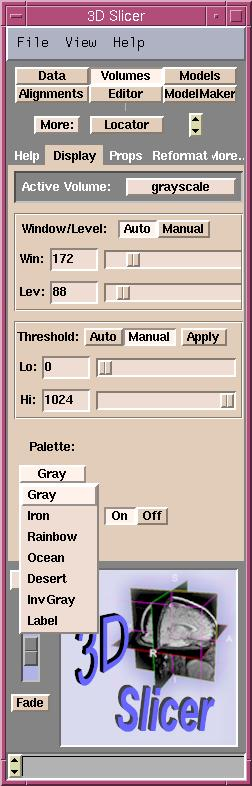

The Palette feature (on the Display tab of the Volumes panel) allows selection of a color scheme to colorize your gray scale volume, which might help you to see different region of interests better. Available schemes are: Gray, Iron, Rainbow, Ocean, Desert, Inverse Gray or Label.
|  |